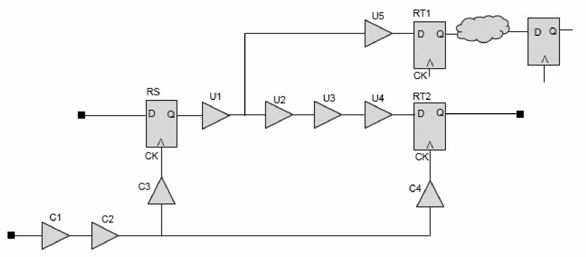
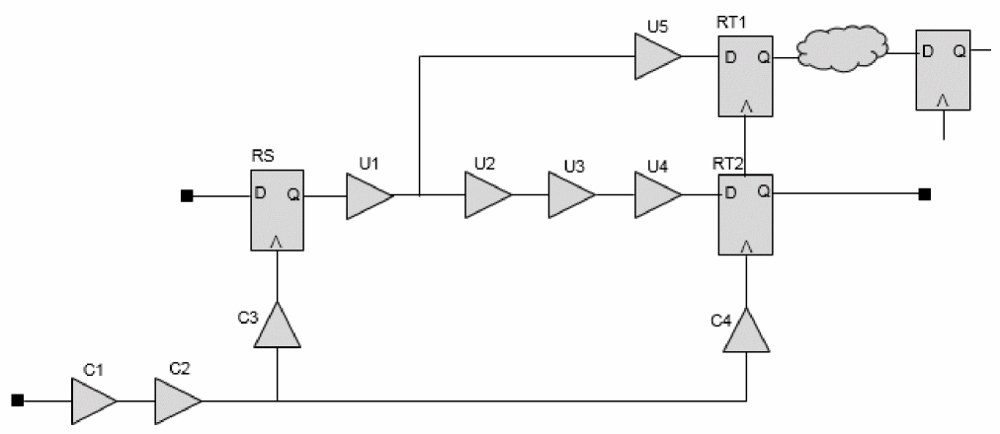
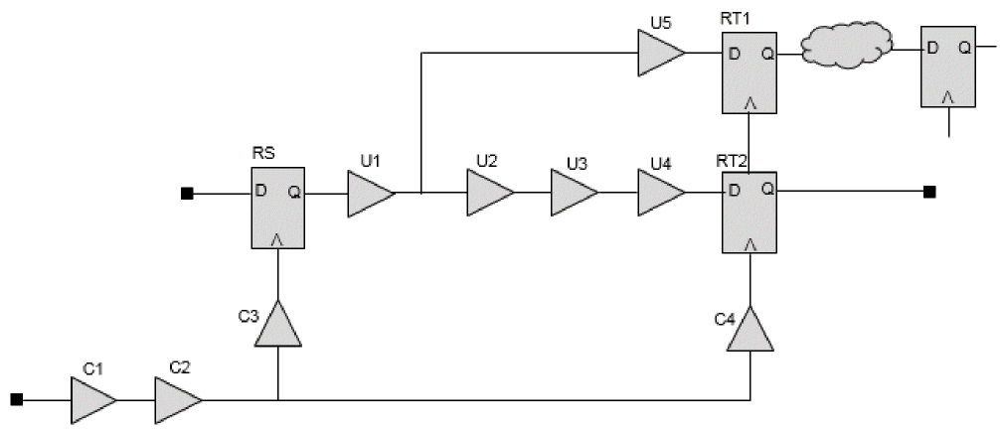
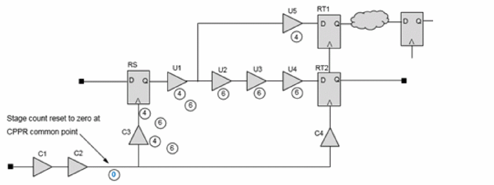

Enabling AOCV Analysis
AOCV analysis can be enabled by using the following command variables.
set_db timing_analysis_aocv true
Reading AOCV Libraries
SMSC Environment
In SMSC environment, the AOCV libraries can be read using the command below:
read_libs -aocv_libs "myDerateLib.aocv.lib"
MMMC Environment
In MMMC environment, AOCV libraries can be read using the create_library_set command.
For example:create_library_set –name slow –timing slow.lib –aocv test.aocv.lib
In case, the library set is already created, it can be updated to read the new aocv library or update the existing library using the update_library_set command.
For example:update_library_set –name slow –aocv test.aocv.lib
Stage Counts and their Properties for Launch and Capture Paths
Most cells in a clock path have both launch stage counts and capture stage counts. This means a clock buffer exists in a launch path and a capture path simultaneously so the buffer has its own launch stage count property and capture stage count property. This section covers a comprehensive explanation for the launch stage count and capture stage count.
The following four timing paths in the figure below explain launch and capture stage counts:
- The timing path from Input to RS/D (input to reg path)
- The timing path from RS/CK to RT1/D (reg to reg path)
- The timing path from RS/CK to RT2/D (reg to reg path)
-
The timing path from RT2/CK to output1 (reg to output path)
Figure -68 Timing Paths

The following default settings are assumed:
set_db timing_aocv_analysis_mode launch_capture; #(default)set_dbtiming_aocv_use_cell_depth_for_net false; #(default: false)
Stage Counting Graph Based Analysis (GBA)
Graph-based AOCV analysis does choose a pessimistic situation so each cell has to its own pessimistic property (only one value, not two or more values like PBA) such as the late launch stage count for cell, early capture stage count for cell, and so on.
The following figure includes the launch cell and net stage counts:
Figure -69 Launch cell and net stage counts

The stage counts of C1 and C2 for launch paths in the above example are as follows:
The clock port is connected to input pin of C1.
- From the clock port, there are 4 launch paths which include C1 and C2. that is, path from the clock port through C1/C2/C3/RS/U1/U5 to RT1.
- The launch path from the clock port through C1/C2/C3/RS/U1/U2/U3/U4 to RT2.
- The launch path from the clock port through C1/C2/C4/RT1 through some combination logic to the FF on the top-right side.
- The launch path from the clock port through C1/C2/C4/RT2 to the output port.
The last path is the shortest launch path that includes C1 and C2 and each launch cell stage count is 4 (C1, C2, C4, and RT2).
Next, stage count is reset to 0 at the common point C2/Y.
In case of the launch path, which includes C3/RS/U1, each stage count of C3/RS/U1 is 4/4/4 for the end point RT1 and stage count of 6/6/6 for the end point RT2.
Now, the problem of choosing the stage count occurs on C3/RS/U1 because the cells exist in the same launch path in the case of the two timings paths (RS to RT1 and RS to RT2) and have different stage count based in path-based AOCV analysis.
Therefore, to maintain pessimism, the smaller stage count 4 is chosen. So, each launch cell stage count of C3/RS/U1 is 4 in case of graph-based AOCV analysis. U5 has a stage count of 4 and U2/U3/U4 has a stage count of 6, respectively. Smaller stage count means more variation, so it is mapped to the worse AOCV derate for late and early.
In the given figure, another common point occurs at the pin C4/Y. which is connected to RT1/CK and RT2/CK. So, state count is reset to 0 at the C4/Y pin. The stage count of the path from the C4/Y through RT1 is longer than that of the path from the C4/Y through RT2 to the output port. RT2 has stage count of 1 and RT1 has a stage count of a value greater than 1 and C4 has a stage count of 2.
The following table summarizes the graph-based launch cell stage counts of the above example:
| Segment | Members | Stage Count | Stage Path |
|
CPPR Common Point (C2/Y) -> |
|||
|
CRPR Common Point (C4/Y) -> Launch Clock Branch Point (RT2) -> data Path Endpoint |
Stage Counting Path-Based Analysis (PBA)
The method to calculate the stage count under path-based AOCV mode is intuitive.
The following figure includes the launch cell and net stage counts:
Figure -70 Launch cell and net stage counts

Firstly, look for the CPPR common point on the clock launch path and the capture path of a timing path.
To derive the common point from RS to RT1:-
- The launch path from RS to RT1: clock->C1->C2->C3->RS->U1->U5->RT1/D
- The capture path from RS to RT1: clock->C1->C2->C4->RT1/CK.
So, the common point (pin) of the above timing path is the C2/Y pin.
To derive the common point from RS to RT2:
- The launch path from RS to RT2: clock->C1->C2->C3->RS->U1->U2->U3->U4->RT2/D.
- The capture path from RS to RT2: clock->C1->C2->C4->RT2/CK.
So, the common point (pin) of the above timing path is the C2/Y pin.
Now, for calculation purpose, the stage count at C2/Y is reset to 0, as shown in below figure.
Figure -71 Stage count at C2/Y reset to 0

Therefore, the launch path from the pin C2/Y to RT1/D has a stage count of 4, that is,
C3(1)->RS(2)->U1(3)->U5(4)->RT1/D
The launch path from the pin RS to RT2/D has a stage count of 6, that is,
C3(1)->RS(2)->U1(3)->U2(4)->U3(5)->U4(6)->RT2/D
| Segment | Members | Stage Count | Stage Path |
The table above summarizes the stage count of the 2 launch paths in PBA.
Based on above derived stage count, the tool calculates the diagonal distance for the timing path and then gets the AOCV derate values from the AOCV derating library with the stage count and the distance.
So, think over which AOCV derates of the cells/nets on the common path are used for the common parts. In the above example, you have to check the stage counts of the cells C1 and C2 on the common path and AOCV derates of the cells. The stage count (SC) calculation on the common path cells is relating to graph-based AOCV analysis.
Return to top